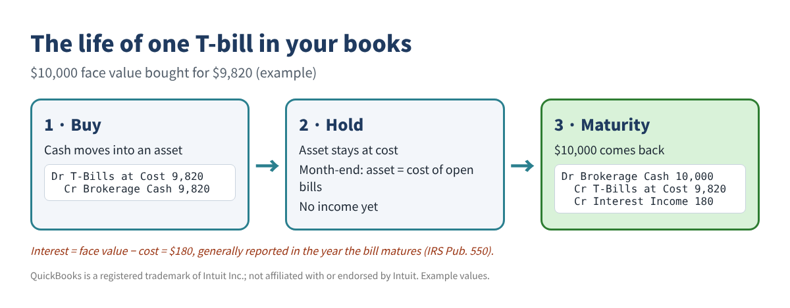
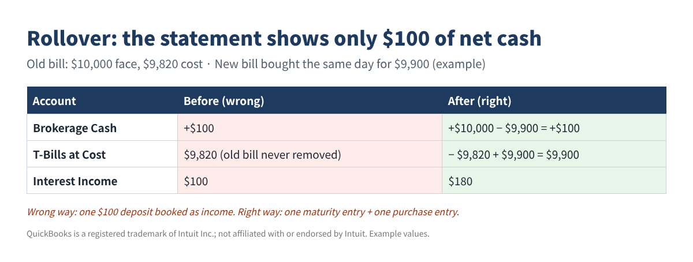
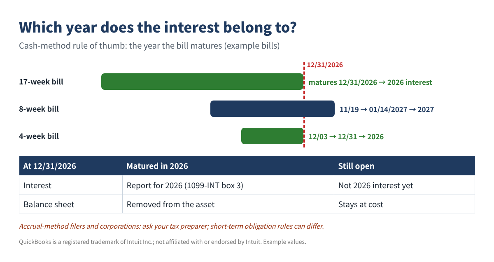

How to Record Treasury Bills and Money Market Funds in QuickBooks (Without Doubling Your Income)
↓ Get the free Excel + PDF kit for this article
More small businesses now park spare cash in Treasury bills or a money market fund at a broker. The money is safe, but the bookkeeping often is not. A T-bill is bought at a discount and pays its full face value at maturity, so there is no interest check to copy into the books. The result we see again and again: the purchase is booked as an expense, the whole $10,000 maturity is booked as income, or a rollover's small net cash is booked as income. Then the profit and loss is wrong, the balance sheet does not match the broker statement, and the 1099s do not match the books.
This guide shows a simple method you can follow in QuickBooks Desktop or QuickBooks Online, plus a small Excel or Google Sheets tracker you can build yourself.
The three rules behind every T-bill entry
- Interest = face value − purchase cost. IRS Publication 550 treats the difference between the discounted price you pay and the face value you receive at maturity as interest income.
- Timing. Pub. 550 says you generally report this interest when the bill is paid at maturity. A bill bought in November 2026 that matures in January 2027 is generally 2027 interest.
- Buying a bill is not an expense. Cash simply moves into another asset. Only the discount becomes income.
Two tax notes to keep in mind: brokers report Treasury interest on Form 1099-INT, box 3, and that interest is subject to federal income tax but exempt from state and local income taxes (Pub. 550). Money market fund payouts are generally dividends, not interest (Pub. 550), so they usually appear on Form 1099-DIV.

Step 1: Set up the accounts once
| Account (suggested name) | Type | Use it for |
|---|---|---|
| Brokerage Cash | Bank | Cash or sweep balance at the broker |
| T-Bills at Cost | Other Current Asset | Bills you still hold, at purchase cost |
| Interest Income - US Treasury | Other Income | The discount when a bill matures |
| Dividend Income - MMF | Other Income | Money market fund payouts |
QuickBooks Online
- Go to All apps → Accounting → Chart of accounts → New account. (If your layout has no All apps, open Chart of accounts from the Accounting or Settings menu.)
- Type the Account name, choose the Account type first, then pick a Detail type from the list that appears. Click Save.
QuickBooks Desktop
- Lists → Chart of Accounts → Account → New. Use Bank, Other Current Asset and Other Income as in the table.
Step 2: Record the purchase and the maturity
Example: a 13-week bill with $25,000 face value bought for $24,770.
| Date | Account | Debit | Credit |
|---|---|---|---|
| Buy date | T-Bills at Cost | $24,770.00 | |
| Buy date | Brokerage Cash | $24,770.00 | |
| Maturity date | Brokerage Cash | $25,000.00 | |
| Maturity date | T-Bills at Cost | $24,770.00 | |
| Maturity date | Interest Income - US Treasury | $230.00 |
Example values only.
- Online: + Create → Journal entry. Choose the account on each line, enter the amount under Debits or Credits, then Save and close. Total debits must equal total credits.
- Desktop: Company → Make General Journal Entries.
- Moving money from your business checking to the broker is a transfer, not an expense: Online + Create → Transfer; Desktop Banking → Transfer Funds.
If the broker or bank account is connected to a bank feed, match the downloaded line to the entry or transfer you already made. Adding it again doubles the cash.
Step 3: Handle rollovers correctly
When a bill matures and a new one is bought the same day, the statement may show one small net amount. Record two entries anyway: the maturity of the old bill and the purchase of the new one.

Step 4: Build a small tracker in Excel or Google Sheets
Put one bill per row. Columns: A Bill name, B Buy date, C Maturity date, D Face value, E Purchase cost. Put your as-of date (for example 12/31/2026) in cell J1 and the tax year in J2.
- F2 Interest:
=D2-E2 - G2 Year to report:
=YEAR(C2) - H2 Still open at cost:
=IF(C2>$J$1,E2,0) - Total interest for the tax year (matured by the as-of date):
=SUMIFS(F:F,G:G,$J$2,C:C,"<="&$J$1) - Bills at cost on any month-end in cell A20:
=SUMPRODUCT(($B$2:$B$30<=A20)*($C$2:$C$30>A20)*$E$2:$E$30)
| Bill | Buy | Maturity | Face | Cost | Interest | Year | Open at 12/31 |
|---|---|---|---|---|---|---|---|
| 26W Jan | 01/08/2026 | 07/09/2026 | $50,000 | $49,040 | $960 | 2026 | - |
| 17W Sep | 09/03/2026 | 12/31/2026 | $30,000 | $29,650 | $350 | 2026 | - |
| 8W Nov | 11/19/2026 | 01/14/2027 | $40,000 | $39,770 | $230 | 2027 | $39,770 |
Example values only.
Step 5: Tie out every month
Each month-end, compare two pairs of numbers: the statement cash balance with your Brokerage Cash account, and the cost of open bills from your tracker with your T-Bills at Cost account. If the T-bill account is higher than the tracker, interest was probably left inside the asset. If cash is off, look for a fee, a transfer or a bank-feed line entered twice. Market value on the statement will differ from cost; most small businesses simply keep T-bills at cost and treat the gap as information.
Step 6: Year-end and the 1099s

| Income | Your books | 1099 box | 1099 amount | Difference |
|---|---|---|---|---|
| Treasury bill interest | $1,765.00 | 1099-INT box 3 | $1,765.00 | - |
| Bank / CD interest | $118.40 | 1099-INT box 1 | $121.07 | ($2.67) |
| Money market fund dividends | $642.18 | 1099-DIV box 1a | $642.18 | - |
Example values only. A difference is a clue: interest credited on December 31 that was never posted, dividends posted as interest, or a bill that matures in early January. If your books are on the accrual basis, you may also accrue the discount earned so far on open bills and reverse it on January 1; that is a book entry and does not decide tax timing. Accrual-method businesses and corporations should ask their tax preparer about the short-term obligation rules.
Common mistakes
- Booking the purchase as an investment expense.
- Booking the full maturity amount as income instead of face value minus cost.
- Booking a rollover's net cash as income.
- Leaving interest inside the T-bill asset, so the asset never matches the statement.
- Adding a bank-feed deposit instead of matching it.
- Recording money market fund dividends as interest, which then does not match the 1099-DIV.
FAQ
Do I need to mark T-bills to market each month?
Most small businesses keep them at cost and show the market value as information. If your lender or accountant wants fair value, ask them how they want unrealized gains shown.
The broker shows "accrued interest" on the statement. Do I book it?
Not on cash-basis books. For accrual-basis books you can post a year-end accrual and reverse it on January 1.
Why is my state return different from my federal return?
Treasury interest is exempt from state and local income taxes (Pub. 550). Tell your preparer which interest is Treasury interest so it is handled correctly.
What if I sold a bill before it matured?
That can create a gain or loss and has its own rules. Give the trade confirmation to your tax preparer.
Checklist
- Accounts created: Brokerage Cash, T-Bills at Cost, Treasury interest income, MMF dividend income.
- Every purchase and maturity posted on its own date; rollovers as two entries.
- Bank-feed lines matched, not added.
- Each month: cash and T-bill balances agree with the statement.
- Year-end: open bills at cost = balance sheet; 1099-INT box 1 and 3 and 1099-DIV box 1a compared.
You can download the ready-made T-Bill & Money Market Recording Kit 2026 for free in the Free kit download box below (Excel + PDF guide, no sign-up).
This article is for educational purposes only and is not tax, legal or investment advice. Examples are illustrations; check your own situation with a qualified tax professional. QuickBooks is a registered trademark of Intuit Inc.; not affiliated with or endorsed by Intuit.
Free kit download
Tools to follow this article step by step. No sign-up needed.
- Excel workbook (.xlsx)TBill_Investment_Tracker_2026_EN.xlsx · 29 KB
- Step-by-step guide (PDF)TBill_Investment_Tracker_2026_Guide_EN.pdf · 135 KB
Free to use for yourself and your own business; please do not resell or redistribute. General information, not tax, legal or accounting advice; check every figure against your own records. QuickBooks is a trademark of Intuit Inc.; BIZLEX is not affiliated with Intuit.
Sources
- IRS Publication 550 (2025), Investment Income and Expenses — U.S. Treasury Bills; Money Market Funds: irs.gov/publications/p550
- TreasuryDirect, Treasury Bills: treasurydirect.gov/marketable-securities/treasury-bills
- Intuit help: Create journal entries in QuickBooks Online: quickbooks.intuit.com
- Intuit help: Add an account to the chart of accounts in QuickBooks Online: quickbooks.intuit.com
- Intuit help: Transfer funds between accounts: quickbooks.intuit.com
- Community questions that inspired this post (read for the problem only): T-bills received back with interest; Set up and maintain a brokerage account